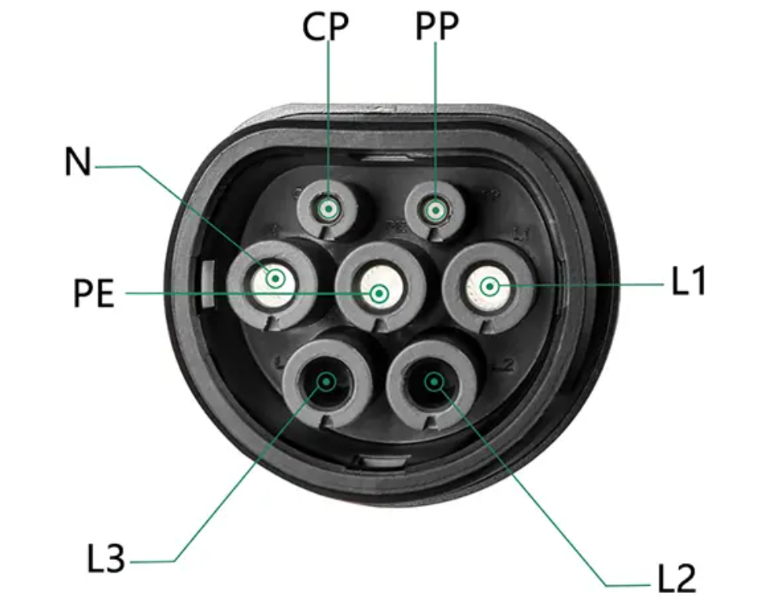

L2 EV Charger
View Code ↗I designed and developed a Level 2 (L2) Electric Vehicle (EV) Charger compliant with the IEC 61851-1 standard, using an STM32 microcontroller as the core controller. This project involved implementing a robust state machine for safe and efficient charging, integrating Control Pilot (CP) and Proximity Pilot (PP) signal detection, and ensuring reliable communication with the vehicle’s Battery Management System (BMS) via CANbus. The charger was successfully tested on an electric vehicle, demonstrating full compliance with international safety and performance standards.
Project Overview
The L2 EV Charger was designed to deliver up to 7.4 kW of power at 230V AC (single-phase), suitable for residential and commercial charging applications. The charger adhered to the IEC 61851-1 standard, which defines the communication protocol between the EV and the charging station using the Control Pilot (CP) and Proximity Pilot (PP) signals. The STM32F4 microcontroller managed all aspects of the charging process, including signal detection, state transitions, safety checks, and communication with the vehicle’s BMS over CANbus.
The system incorporated safety features such as relays for controlling current flow, which were only activated in State B of the CP state machine, ensuring no power was delivered until the vehicle was properly connected and ready to charge. The charger also used operational amplifiers (op-amps) to generate the CP signal and a 12V power supply to power the control circuitry.
System Architecture
The L2 EV Charger architecture was built around the STM32F4 microcontroller, which provided the processing power and peripherals needed for real-time control. The STM32 used its Analog-to-Digital Converters (ADCs) to read the Control Pilot (CP) signal voltage levels and detect the Proximity Pilot (PP) resistance, which indicated the presence and current rating of the charging cable. The CP signal was generated using an op-amp circuit to produce a 1 kHz PWM signal with voltage levels of ±12V (unloaded) and +9V/+6V (loaded), as per the IEC 61851-1 standard.
The charger communicated with the vehicle’s BMS via CANbus, using the ISO 11898 protocol to retrieve battery data such as state of charge (SoC), state of health (SoH), and maximum charging current. Two electromechanical relays were used to control the AC power flow to the vehicle, with a third relay for ground fault protection, ensuring safety in case of a fault condition.
Control Pilot (CP) and Proximity Pilot (PP) Implementation
The Control Pilot (CP) signal was the cornerstone of the charger’s communication with the EV, implemented per IEC 61851-1. The CP circuit used an op-amp (e.g., LM358) to generate a 1 kHz PWM signal with a 12V peak-to-peak amplitude, which was then modulated to communicate the charger’s state and available current. The STM32’s ADC sampled the CP signal at 10 kHz to detect voltage levels, determining the EV’s state:
- State A (Not Connected): +12V DC (no PWM), indicating no vehicle connected.
- State B (Connected, Not Charging): +9V PWM, indicating the vehicle is connected but not ready to charge.
- State C (Charging): +6V PWM, indicating the vehicle is charging with ventilation not required.
- State D (Charging with Ventilation): +3V PWM (not implemented in this project).
- State E/F (Error): 0V or -12V, indicating a fault condition (e.g., ground fault or disconnection).
The Proximity Pilot (PP) signal was used to detect the presence of the charging cable and its current rating. A resistor network in the cable (per SAE J1772) altered the PP signal voltage, which was read by the STM32’s ADC. For example, a 220Ω resistor indicated a 32A cable, while a 1.5kΩ resistor indicated a 13A cable. This ensured the charger never exceeded the cable’s rated current.
State Machine Implementation
I implemented a finite state machine (FSM) on the STM32 to manage the charging process and ensure safe state transitions, adhering to IEC 61851-1. The FSM was written in C and included the following states and transitions:
- Idle (State A): The charger outputs a +12V DC signal on the CP line, waiting for a vehicle connection. Relays remain open.
- Vehicle Connected (State B): Upon detecting a vehicle (CP voltage drops to +9V), the charger starts a 1 kHz PWM signal with a duty cycle corresponding to the maximum available current (e.g., 50% duty for 32A). Relays remain open until the vehicle requests charging.
- Charging (State C): When the vehicle requests charging (CP voltage drops to +6V), the STM32 closes the power relays to start current flow, continuously monitoring the CP signal for changes.
- Error Handling (State E/F): If the CP voltage indicates a fault (e.g., 0V or -12V), the charger opens the relays, halts charging, and signals an error via a status LED.
- Shutdown: Upon disconnection (CP returns to +12V), the charger opens the relays and returns to the Idle state.
The state machine included safety checks at every transition, such as verifying the PP signal, checking for ground faults via a residual current device (RCD), and ensuring the vehicle’s BMS was ready to charge via CANbus.
CANbus Communication with BMS
The charger communicated with the vehicle’s Battery Management System (BMS) over CANbus at 500 kbps, using the STM32’s built-in CAN controller. The BMS provided critical data, including:
- State of Charge (SoC) and State of Health (SoH).
- Maximum allowable charging current and voltage.
- Fault conditions (e.g., overvoltage, overtemperature).
The charger sent periodic status messages to the BMS, including the CP state, available current, and charger fault status. The CAN messages followed a custom protocol with 11-bit identifiers, ensuring compatibility with the vehicle’s BMS. The STM32 implemented a CAN filter to prioritize BMS messages and reduce interrupt overhead.
Power and Safety Circuitry
The charger used two electromechanical relays to control the AC power flow (Line and Neutral) to the vehicle, rated for 40A at 230V AC. A third relay was used for ground fault protection, interfaced with a residual current device (RCD) to detect leakage currents above 30 mA. The relays were only closed in State B (vehicle connected) and State C (charging), ensuring no power was delivered until the EV was ready.
The control circuitry was powered by a 12V DC supply, derived from a switch-mode power supply (SMPS) with galvanic isolation for safety. The CP signal generation circuit used an op-amp to produce the required ±12V PWM signal, with a voltage divider and diode clamping to limit the voltage to +9V/+6V when loaded by the vehicle.
Testing and Validation
The L2 EV Charger was rigorously tested on an electric vehicle to ensure compliance with IEC 61851-1 and SAE J1772 standards. The testing process included:
- CP Signal Validation: Verified the PWM signal amplitude, frequency, and duty cycle using an oscilloscope, ensuring correct state transitions (A → B → C).
- PP Detection: Tested with different charging cables (13A, 32A) to confirm accurate current limit detection.
- Charging Performance: Charged the EV at 7.4 kW, monitoring the SoC via CANbus and verifying stable operation over a 4-hour cycle.
- Safety Tests: Simulated fault conditions (e.g., ground fault, cable disconnection) to confirm the charger entered State E/F and opened the relays.
The charger successfully charged the EV without any issues, delivering a full charge while maintaining all safety protocols. The state machine ensured robust operation, with no unexpected state transitions during testing.
Technical Features
- Level 2 charging at 7.4 kW (230V AC, 32A) per IEC 61851-1.
- Control Pilot (CP) signal generation and detection using op-amps and STM32 ADCs.
- Proximity Pilot (PP) detection for cable current rating.
- Finite state machine for safe and compliant charging operation.
- CANbus communication with the vehicle’s BMS for real-time data exchange.
- Safety relays and RCD for overcurrent and ground fault protection.
- 12V isolated power supply for control circuitry.
This project demonstrated my deep understanding of EV charging protocols, embedded systems design, and safety-critical applications. The successful implementation and testing of the L2 EV Charger on an actual electric vehicle underscored my ability to deliver a standards-compliant, reliable charging solution.